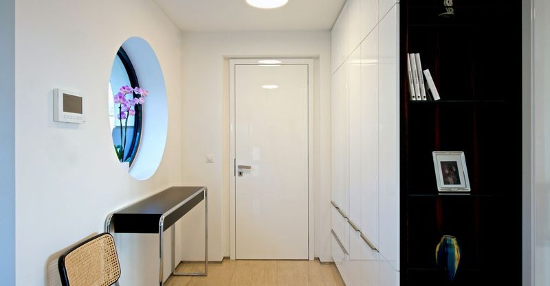

Nejlepší způsob, jak se inspirovat, je vyrazit do terénu. My jsme se několikrát vydali na procházku do brněnské Masarykovy vilové čtvrti, která je charakteristická meziválečnou funkcionalistickou architekturou. Stojí za to vypravit se i na Kociánku, kde vzniká zcela nová čtvrť s domy ve funkcionalistickém stylu. No a návšteva vily Tugendhat je skoro povinností pro každého, kdo plánuje stavět moderní rodinný dům.
Ze všech nejvíc mě asi ovlivnil a inspiroval Martin Jaroš, který podrobně zdokumentoval stavbu rodinného domu na svém blogu nasdomek.cz. Blog jsem celý přečetl a líbí se mi Martinův přístup - důraz na kvalitu, jednoduchost, nadčasovost. Taky se mi líbí funkcionalistický styl. Od Martina jsem se poprvé dozvěděl o existenci VPC (vápenopískové cihly) a dřevohliníkových oknech. Objevil jsem díky němu program SketchUp, ve kterém se dá snadno vytvořit 3D model domu a následně třeba i vytisknout na 3D tiskárně. I když se s ním ve všem názorově neshodnu (pasivní dům, inteligentní elektroinstalace), rozhodně doporučuji všem budoucím stavebníkům jeho blog přečíst. Pan Jaroš mě vlastně také inspiroval k tomu psát tento blog.
Nechali jsme se inspirovat i několika praktickými nápady či designovými prvky konkrétních domů. Na našem domě budeme mít velké kulaté okno, které má např. Vila ve Slavkově u Brna od Europrojekty. Pasivní dům na Kociánce od Ing. arch. Pavla Jury má v krytém přístřešku před domem kulatý světlík. Podobný nápad využijeme i my u přístřešku parkovacího stání. Dům Piano od Magion Architekti má propojené dětské pokoje velkými dvoudílnými posuvnými dveřmi. Skvělý nápad! Chceme, aby si děti spolu hrály a rozhodně je nechceme separovat. Vodníci nás inspirovali peletami, které se do pasivního domu hodí více, než klasická kamna na dřevo. V domě budeme mít peletovou krbovou vložku.

Zdroj: Vila ve Slavkově u Brna
Zde uvádím několik stavebních blogů, které sleduji:
Zajímavý je i Instagramový profil Dva v domě o stavbě domu ve tvaru diamantu v Újezdu u Průhonic. Interiérová designérka Martina Pištěláková z Martina Design má na YouTube skvělý seriál Ladíme bydlení. Ještě bych doporučil YouTube kanál Pavla Šimka, který dělá nezávislý stavební dozor a točí o tom videa. Pan Šimek se zaměřuje pouze na dřevostavby, což jde mimo nás, ale i tak je to zajímavé. Mezi další zajímavé YouTube kanály patří: DřevoPortál, Svépomocí.cz, TZB-info.
A na závěr inspirace v architektuře: